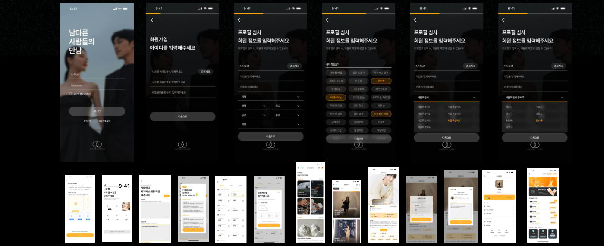

결정사와 소개팅 앱 사이의 빈틈을 노린 데이팅 앱을 기획해 MVP 2주 만에 매출 600만 원, 전환율 40%를 만들었습니다.
기여도
100%참여 인원 2명
역할
데이팅 서비스 기획 / PM
기간
2024.05 ~ (1년 1개월)
범위
모바일 웹, 앱, 어드민
역할 및 기여도
- 1서비스 모델 개편자동 매칭 앱에서 매니저가 직접 소개하는 서비스로 전환
- 2서비스 기획과 IA서비스 개요, 전체 메뉴 구조, 가입과 프로필 흐름 정의
- 3유저 플로우와 화면 설계데일리카드, 매니저 매칭, 인증 심사 화면 설계
- 4UI/UX 리디자인3단계 스와이프 가입, 카드형 UI, 다크/라이트 디자인 시스템
- 5어드민과 운영매니징 대시보드, 결제와 멤버십, 스토어 출시
성과
- 600만 원웹 랜딩 MVP 2주 매출
- 15만 원매니저 소개형 전환으로 높인 객단가
- 40%유료 전환율 (잠재 고객 100명 중 40명)
- 80%백오피스 구축으로 운영 리소스 절감
- 7,000원대인증 기반 앱의 가입당 비용(CPA)
문제와 해결
기존 문제설계한 해결
- 자동 매칭 소개팅 앱의 미검증 프로필과 낮은 신뢰도매니저가 직접 소개하는 서비스로 개편, 서류 인증으로 검증 강화
- 저렴한 자동 매칭이라 서비스 단가를 올리기 어려움신뢰도와 검증을 갖춘 매니저 소개로 서비스 단가 자체를 인상
- 결정사의 높은 비용과 복잡한 가입 절차AI 데일리카드와 합리적인 VIP 매니징
- 긴 스크롤 가입 구간에서 이탈이 가장 많음3단계 스와이프 UI와 프로그레스 바
- 외부 메신저로 대화가 빠져나감24시간 리마인드 푸시와 앱 내 매니저 채팅
리디자인 화면

텍스트 중심 다크 UI를 앰버 그라데이션과 카드형 UI로 바꾼 After 화면
산출물
- 서비스 개요서
- 문서 이력
- 유저 플로우
- 와이어프레임
- UI 리디자인
- 어드민 설계